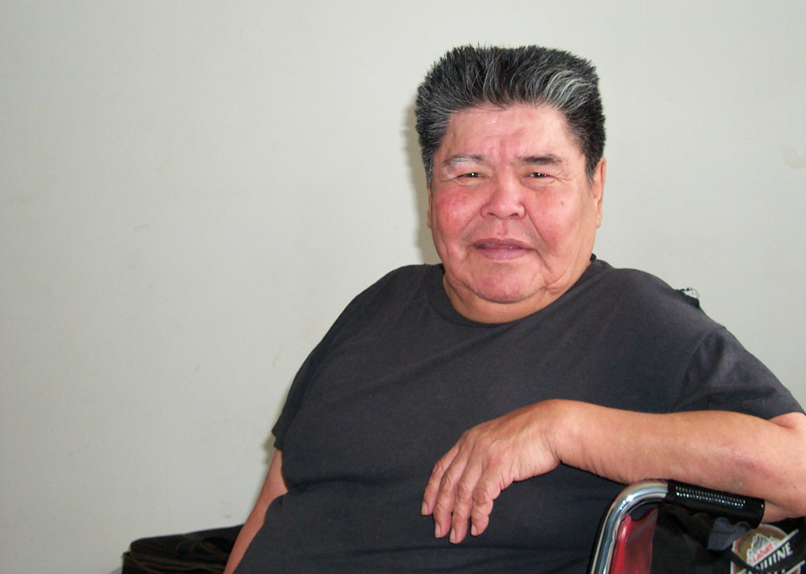

About Recordings
Mike Abou, 2000. Photo by Sharon Hargus
The recordings of Mike Abou were by Sharon Hargus on a Sony WM-D6C cassette recorder. Free translations of sentences are by Mary Charlie, Edna McCook, Eileen McCook, Mike Abou and Sharon Hargus. Transcription and word glosses are by Sharon Hargus.
Occasionally Mike would use a word or phrase of English in a sentence as he was telling the story. Whenever possible, within-sentence English has been translated into Tsek'ene by Mary, Edna and Eileen and are provided here for the reader.
Sometimes entire sentences which were thought necessary to understand the plot were added by Mary etc. These too are not on the accompanying audio recording as they were not part of Mike's original telling. These Tsek'ene sentences are presented here in a different color font.